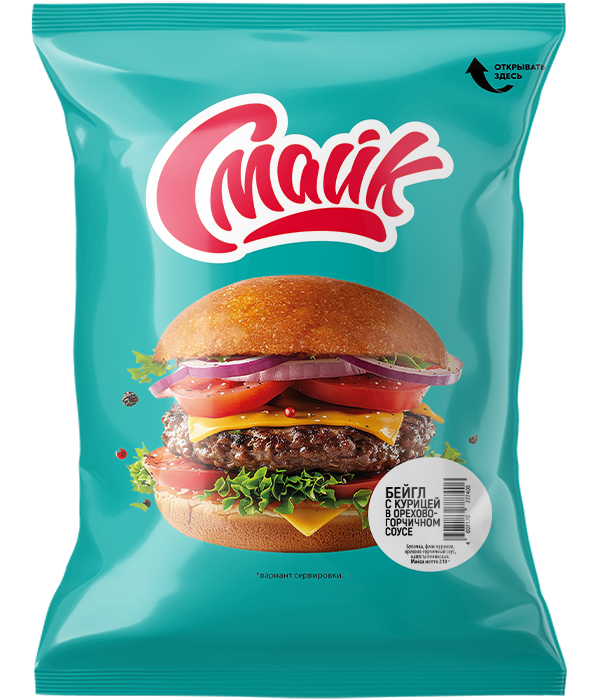

Бейгл с курицей в орехово-горчичном соусе

Состав: булочка зерновая, филе куриное, орехово-горчичный соус, капуста пекинская.
Масса нетто: 210 г.
Пищевая и энергетическая ценность в 100 г продукта (средние значения):
Белки – 8,5 г.
Жиры – 12 г.
Углеводы – 23 г.
Калорийность – 230 ккал / 960 кДж.